responsefunctions.Rmd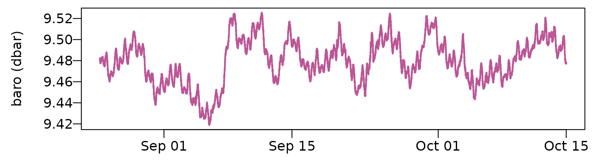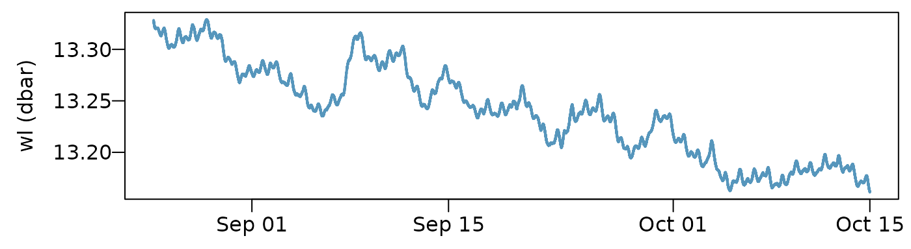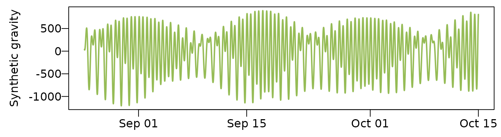
Response functions can provide a more complete picture than single value methods that were presented in the Static BE vignette. Static BE methods tend to be very simple to apply but their interpretation and any derivative values determined from them should be treated as rough estimates in all but the most ideal circumstances. In the Synthetic example vignette we fit barometric response functions for a synthetic dataset with a known response function to test the efficiency of different methods.
This vignette shows how to calculate the impulse response functions (time domain) and frequency response functions (frequency domain) for water levels, barometric pressure and Earth tides using field data. Including terms for Earth tides is suggested for confined and semi-confined aquifers so our examples will show how to easily include them with the earthtide package.
We have decided to take the approach used in the recipes package for the time being where we provide steps to build our dataset to be used for linear regression. By building the dataset with a recipe, it also allows for the user to easily specify the model of choice. For our examples we will use the lm function to determine the appropriate parameters. By the end of the time-domain section we will have fit the data using the following methods:
Regular and irregular lag models can be specified in the same manner. In this example we generate a set of regularly spaced lags using seq, but they could be specified individually or with another function. We find logarithmically spaced lags generated with log_lags can work well to get good resolution at early times while still having a parsimoneous model.
Monitoring interval: 2 minutes
Barometric lag range: 0 to 360 by 5
Earth tide lag range: 0 to 180 by 15
Natural spline fit for temporal trend with 31 degrees of freedom
delta_t <- 120 # seconds
max_lag_baro <- 43200/delta_t # 0.5 days
lag_baro_spacing <- 2 # 4 minute between lags
max_lag_et <- 21600/delta_t # 0.25 days
lag_et_spacing <- 15 # 30 minutes between lags
ns_df <- 21 # natural spline with 21 terms
ba_lags <- seq(0, max_lag_baro, lag_baro_spacing) # barometric lag terms (reg)
et_lags <- seq(0, max_lag_et, lag_et_spacing) # earthtide lag terms (reg)
dat <- recipe(wl~., transducer) %>% #1
step_lag_matrix(baro, lag = ba_lags, role = 'lag_matrix_baro') %>% #2
step_lag_matrix(et, lag = et_lags, role = 'lag_matrix_et') %>% #3
step_mutate(datetime2 = as.numeric(datetime)) %>% #4
step_ns(datetime2, deg_free = ns_df, role = 'splines') %>% #5
prep() %>% #6
portion() #7We can fit the model with lm and the fitting method is the same for each of the recipes so we will not repeat that code in the following examples.
fit <- lm(outcome~lag_matrix_baro + lag_matrix_et + splines, dat, # fit model
x = FALSE, y = FALSE, tol = 1e-50,
na.action = na.exclude)
dat <- transducer %>% mutate(residuals = residuals(fit)) # add residuals
resp <- response_from_fit(fit) # get the baro response
summarize_lm(fit)[, -c('adj_r_squared'), with = FALSE]
#> variable form n_obs n_coef
#> <char> <char> <int> <int>
#> 1: wl outcome ~ lag_matrix_baro + lag_matrix_et + splines 36361 216
#> df sigma r_squared AIC pivot has_intercept
#> <int> <num> <num> <num> <list> <lgcl>
#> 1: 36145 0.0003069872 0.9999527 -484821.4 1,2,3,4,5,6,... TRUE
#> term_labels coefs
#> <list> <list>
#> 1: lag_matrix_baro,lag_matrix_et,splines <data.table[216x5]>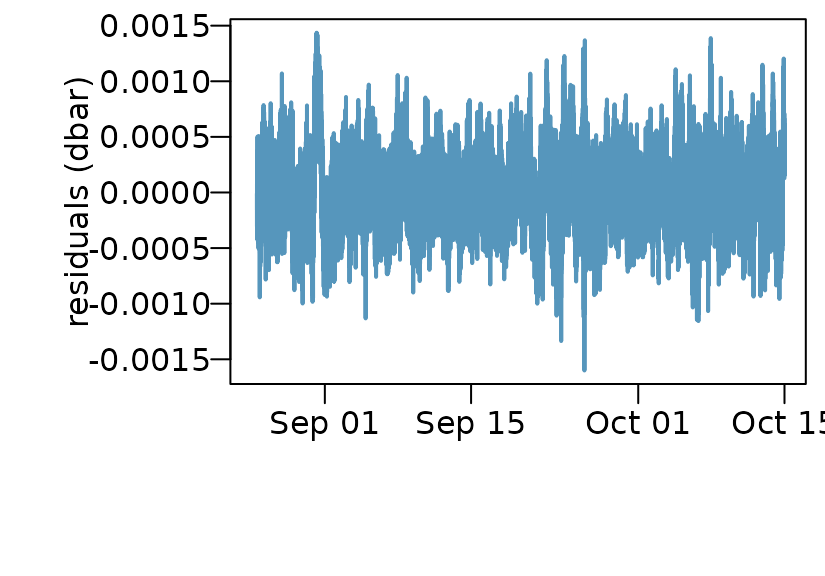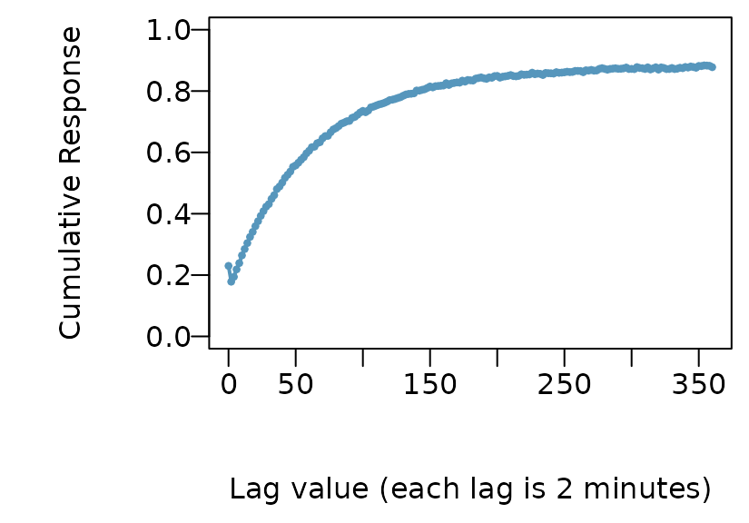
For this example we use step_lag_distributed instead of step_lag_matrix. We then specify knots that are logaritmically spaced using log_lags. This decreases the number of regressors while still capturing early time behaviour. Results are visibly similar, however, the distributed lag model is requires fewer regressors, is faster to solve, and provides better early time resolution in this example.
knots <- log_lags(15, max_lag_baro)
dat <- recipe(wl~., transducer) %>%
step_distributed_lag(baro, knots = knots) %>%
step_lag_matrix(et, lag = et_lags) %>%
step_mutate(datetime_num = as.numeric(datetime)) %>%
step_ns(datetime_num, deg_free = ns_df, role = 'splines') %>%
prep() %>%
portion() #> variable form n_obs n_coef df
#> <char> <char> <int> <int> <int>
#> 1: wl outcome ~ distributed_lag + lag_matrix + splines 36362 49 36313
#> sigma r_squared AIC pivot has_intercept
#> <num> <num> <num> <list> <lgcl>
#> 1: 0.0003061451 0.9999527 -485200.9 1,2,3,4,5,6,... TRUE
#> term_labels coefs
#> <list> <list>
#> 1: distributed_lag,lag_matrix,splines <data.table[49x5]>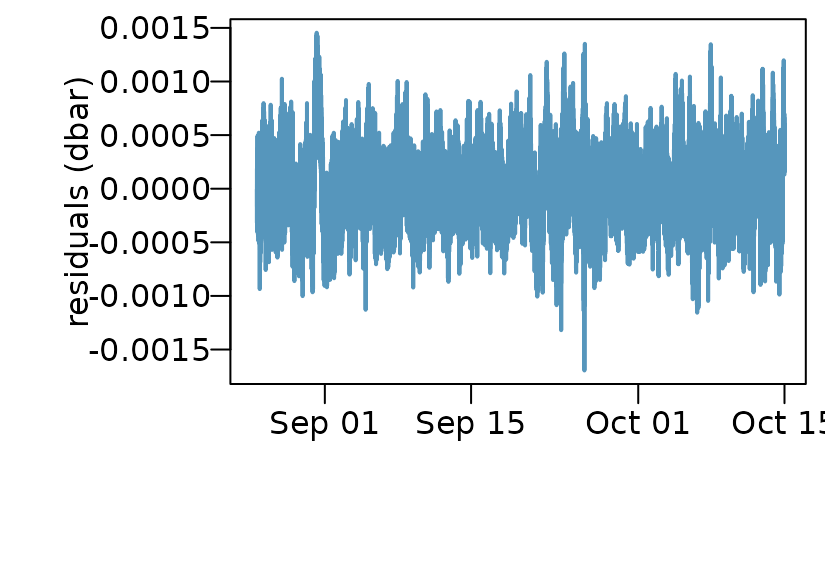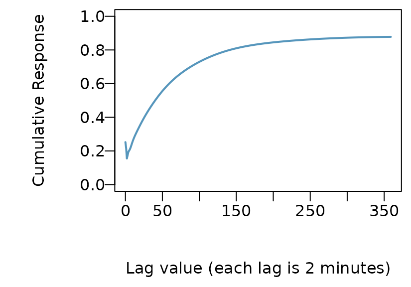
In the previous two examples we used a lagged version of the pre-computed Earth tide signal. We also have the option of directly specifing the Earth tide calcuation in the recipe.
Three primary ways to do this as implemented in waterlevel are:
Using a lagged form of the Earth tide signal. This method uses the earthtide package to calculate a synthetic tide and lag the result. For datasets of less than 14 days, this is the preferred method. The problem is that the regression coefficients are not easily interpreted, but for removing a signal they work well.
Calculate the Earth tide components for wave groups and use those in the regression equation. This method uses the earthtide package to calculate synthetic tidal constituents.
Generate cosine curves of different frequencies. For this method the frequencies are specified in cycles per day and the appropriate sin and cos curves used in regression are created.
Here are example steps for the above three methods:
# Method 1
step_lag_earthtide(datetime,
lag = et_lags,
longitude = -118.67,
latitude = 34.23,
elevation = 550,
wave_groups = wave_groups,
astro_update = 60)
# Method 2
step_earthtide(datetime,
longitude = -118.67,
latitude = 34.23,
elevation = 550,
wave_groups = wave_groups,
astro_update = 60)
# Method 3 with top 6 diurnal and semi-diurnal signals O1, K1, P1, N2, M2, S2
step_harmonic2(datetime,
freq = c(0.9295357, 0.9972621, 1.0027379,
1.8959820, 1.9322736, 2.0000000)) Let’s use our previous recipe for the distributed lag dataset but instead use method 2 for Earth tides.
# Select wavegroups
wave_groups <- as.data.table(earthtide::eterna_wavegroups)
wave_groups <- wave_groups[start > 0.5]
wave_groups <- na.omit(wave_groups[time == '1 month', c('start', 'end')])
knots <- log_lags(15, max_lag_baro)
dat <- recipe(wl~., transducer) %>%
step_distributed_lag(baro, knots = knots) %>%
step_earthtide(datetime,
longitude = -118.67,
latitude = 34.23,
elevation = 550,
wave_groups = wave_groups,
astro_update = 60,
scale = TRUE) %>%
step_mutate(datetime_num = as.numeric(datetime)) %>%
step_ns(datetime_num, deg_free = ns_df, role = 'splines') %>%
prep() %>%
portion() #> variable form n_obs n_coef df
#> <char> <char> <int> <int> <int>
#> 1: wl outcome ~ distributed_lag + earthtide + splines 36362 60 36302
#> sigma r_squared AIC pivot has_intercept
#> <num> <num> <num> <list> <lgcl>
#> 1: 0.0003014908 0.9999542 -486304 1,2,3,4,5,6,... TRUE
#> term_labels coefs
#> <list> <list>
#> 1: distributed_lag,earthtide,splines <data.table[60x5]>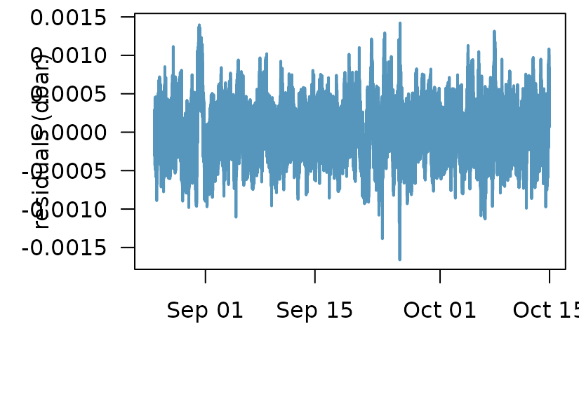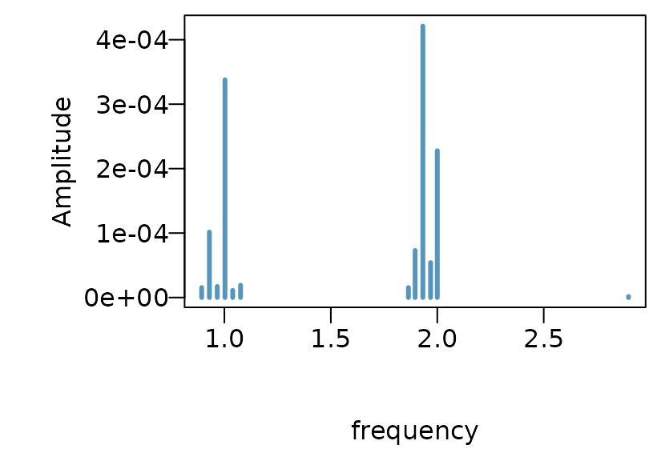
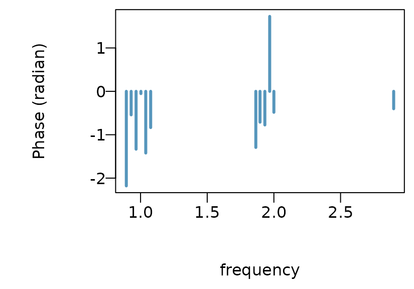
The three models tend to perform similarly for this well. However, I would choose the last model as it has the fewest, regressors, the lowest residual standard error, and provides useful Earth tide amplitude and phase information. This well had a generally small Earth tide component and it is hardly visible in the original wl pressure time series, however, we seem to be able achieve reasonable approximation of the theoretical amplitudes.
The following papers provide a good introduction to frequency response functions and their applications to water levels Hussein, Odling, and Clark (2013).
There are currently two ways to calculate the transfer function in the waterlevel package. Using the default method which smooths the periodogram, or using Welch’s method. See spec_pgram and spec_welch for parameters. Often there is a lot of noise at high frequencies. We plot Acworth’s method of static BE as a point in each figure, which is fundamentally just the value of the transfer function at 2 cycles per day (Acworth et al. (2016)). These methods also output the phase and coherence, but for the following plots we will stick to gain which can be thought of as the loading efficiency as a function of frequency for these examples.
tf_pgram <- transfer_fun(transducer,
vars = c('wl', 'baro', 'et'),
time = 'datetime',
method = 'spec_pgram',
spans = c(3))
tf_welch <- transfer_fun(transducer,
vars = c('wl', 'baro', 'et'),
time = 'datetime',
method = 'spec_welch',
n_subsets = 10)
# Acworth BE
be_a <- be_acworth(transducer, wl = 'wl', ba = 'baro', et = 'et',
inverse = FALSE)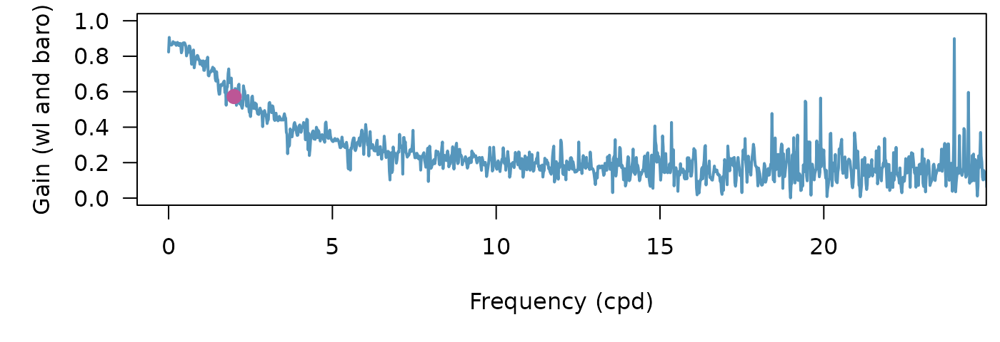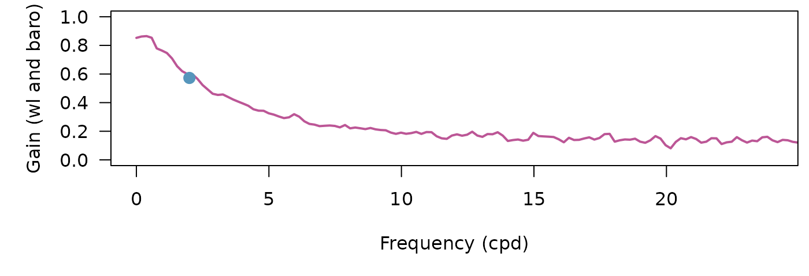
One way to decrease the noise is to use Konno-Ohmachi smoothing (Konno and Ohmachi 1998). This method can be slow for large datasets so we provide serial and parallel versions, konno_ohmachi_parallel, konno_ohmachi_serial.
tf_pgram <-
tf_pgram %>%
mutate(gain_wl_baro_smooth = konno_ohmachi_parallel(tf_pgram$gain_wl_baro,
tf_pgram$frequency,
b = 10))
tf_welch <-
tf_welch %>%
mutate(gain_wl_baro_smooth = konno_ohmachi_parallel(tf_welch$gain_wl_baro,
tf_welch$frequency,
b = 10))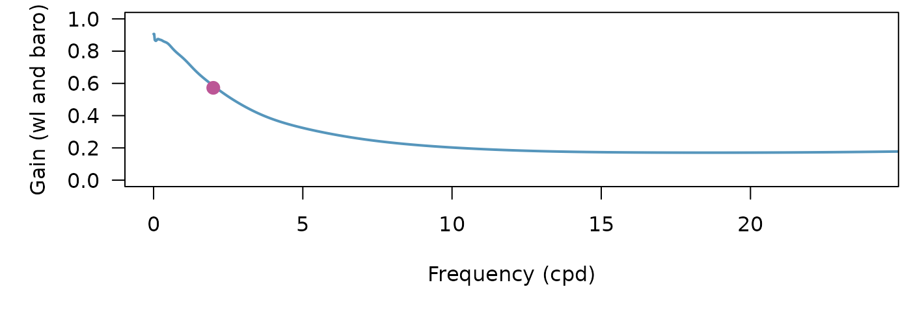
The frequency response methods are robust but often parameters may need to be tuned for a particular study. In particular, when calculating high frequency portions of spectra the Welch’s method with many subsets can perform well.